说明：Zeus耗时分析功能说明
一、背景
策略执行链路超时是导致策略异常的原因之一，超时的原因主要有：路由逻辑复杂、规则逻辑冗余、fetcher超时，为使策略、产研对策略运行链路的耗时有更直观的感知，故建设事件、场景、规则维度的耗时分析能力，从而提升耗时问题定位效率、辅助策略进行规则治理、统一上下游对超时定义的口径。
项目PRD：学城文档 1227913388（无权限读取标题）
二、数据覆盖范围
本期仅覆盖通过Tatooine->Zeus的路径耗时分析数据，而外部系统直接调Zeus的耗时监控不在本期范围内（二期会接入这部分能力）。
三、名词解释
Partner ：即业务方，来定义一个业务在特定场景下的接入标识，说明：风控常用代码表、 yoda-partner列表
Appkey：调用方接口标识。
事件：Tatooine事件在策略团队侧被定义为业务活动中用户的风险行为节点，在技术侧被定义为两类接口（同步&异步），即业务在业务流程中针对需要进行风控判定的节点，调用对应的事件接口，从而获取风控决策。Tatooine事件的理解
调用量：在选定时间区间内事件/场景/规则的总请求次数。
超时量：在选定时间区间内事件/场景 超过耗时要求的请求量。
超时率：超时量/调用量。
耗时要求：在业务接入时，由Partner+Appkey+事件定义一条SLA要求（包含耗时要求），SLA的定义说明可参考：学城文档 1287292014（无权限读取标题）、 06 风控服务SLA（Service-level agreement）
TP999：在用户选择时间范围内，在所有请求中，耗时按照从小到大的顺序排列，排位比在99.9%的请求耗时。
平均耗时：在选定时间区间内，所有请求的耗时加总取平均。
最长耗时：选定时间区间内，所有请求中耗时最长的请求耗时。
TT调Zeus失败量：requestid维度，tatooine调zeus失败的请求量。
TT调Zeus失败率：requestid维度，tatooine调zeus失败的请求量/tatooine调zeus的总请求量。
四、功能说明
功能入口：Zeus->监控中心->耗时分析
在Zeus中增加【监控中心】菜单，用于耗时情况监测与分析。通过条件筛选可筛选出特定条件下的事件、场景（包含普通场景、普通路由场景、多级路由场景）、规则、数据接口的耗时情况，从而监测耗时情况是否符合预期/分析超时case的具体耗时原因。
4.1 数据筛选逻辑
由于耗时指标的计算底层依赖大量的数据计算及关联，为提升加载速度，在数据查询时对筛选条件做了限制。
- Partner、Appkey、事件，用户需至少选择一个进行查询（因为在未定义Partner+Appkey+事件的组合非常多，将会造成数据难以加载），系统默认展示Partner值最大的耗时情况。
- 事件的耗时情况是上游系统能感知和衡量是否超时的系统粒度，场景的耗时要求根据上游对事件耗时要求-20ms来定义，因此在逻辑筛选场景时需选定场景所在的事件。
- 筛选规则、数据接口时，需筛选规则所在的场景。
- 筛选时间支持近15天的数据查询，首页默认展示近1h的数据。
-
支持各个表单的翻页，及在本页按照数字指标正序/倒序排列，默认按照超时率从大到小排列。
*以为账户风控-69注册事件为例
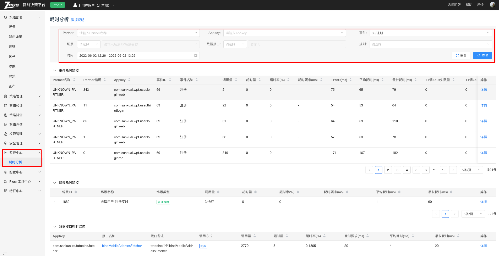
4.2 事件耗时
由于zeus暂无维护事件与business的映射关系，在没有选定事件时，事件默列表全部空间的耗时情况。
- 事件耗时列表中展示Partner+Appkey+事件组合的调用量、超时量、超时率、耗时要求、平均耗时、最长耗时、TT调Zeus失败量、TT调Zeus失败率。在每条耗时数据后都可点击“详情”查看事件维度的耗时监控。
- 事件耗时分析分别展示事件的基本信息，及调用量、超时量、TT调Zeus失败量、超时率、TT调Zeus失败率、TP999、平均耗时、最长耗时、耗时要求的监控图。
- 监控默认展示近1h的耗时情况，用户最多可选择近15天的耗时情况。
- 单个请求的日志详情用户可点击进入“日志查询”查看。
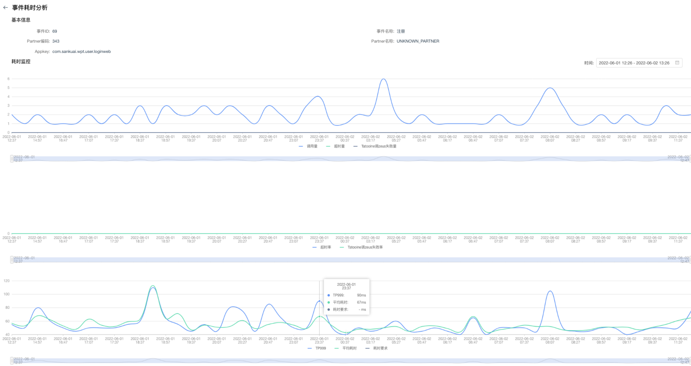
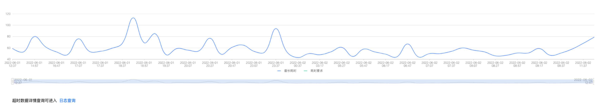
4.3 场景耗时分析
在进行场景耗时分析时用户需先选择场景所绑定的事件，场景选择前用户需选择场景类型（普通场景、普通路由、多级路由）再通过输入场景ID/名称的方式查看场景的耗时情况。
- 普通场景：展示场景的调用量、超时量、超时率、耗时要求、平均耗时、最长耗时，以及场景下规则的耗时情况。、
- 普通路由、多级路由：展示路由场景下的路由规则（如果有多个路由规则则所有路由平铺罗列）、子场景及子场景下的规则的耗时情况。
- 场景可点击“详情”查看整个场景的耗时监控，规则不支持耗时监控的查看（规则的耗时和场景强关联，且无规则维度的耗时要求的定义）。
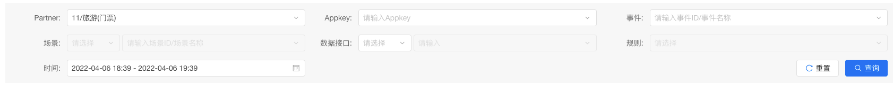
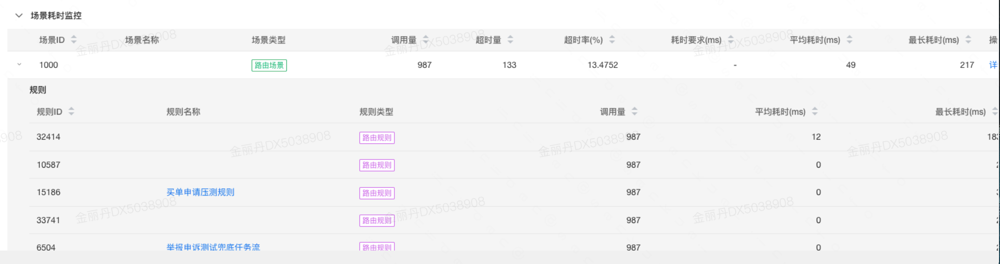
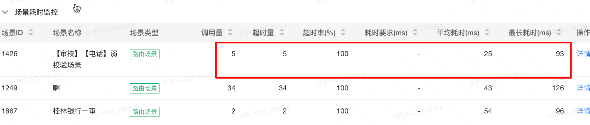
4.4 数据接口耗时分析
数据接口耗时表单展示筛选条件下（最多到场景）所引用到的数据接口的耗时情况。展示数据接口的调用量、超时量、超时率、耗时要求、平均耗时、最长耗时，且用户可点击“详情”查看接口维度的耗时监控。
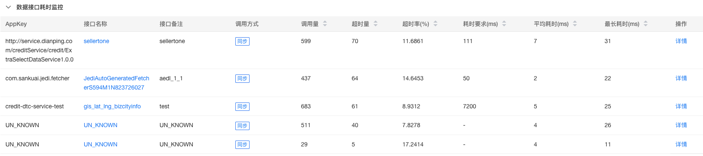
耗时监控包含：接口调用量、超时量、超时率、平均耗时、最长耗时、耗时要求的耗时监控。
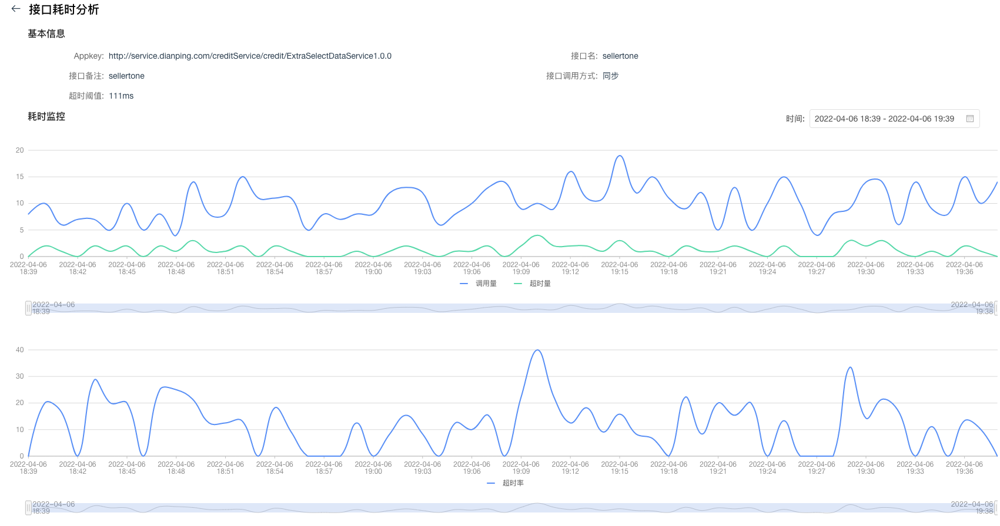
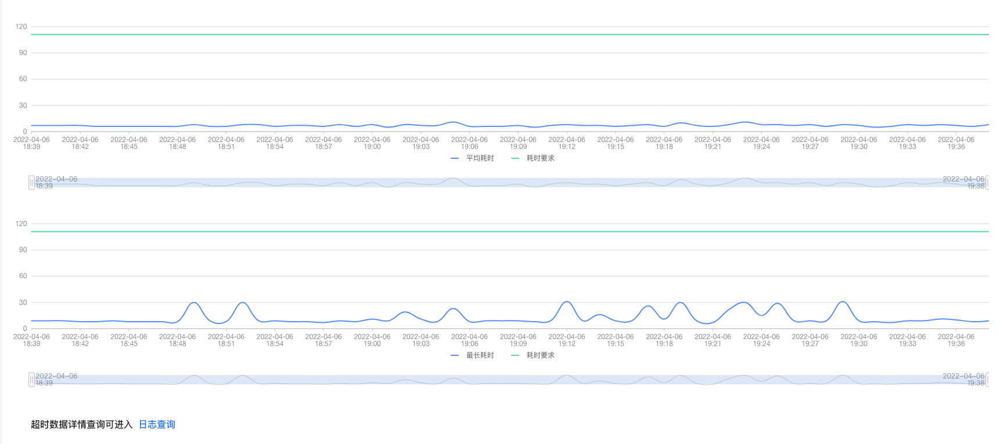
4.5 标记转生效耗时提示
对标记规则转生效前，将有弹窗提示标记规则近一周的平均耗时和场景的耗时要求进行对比，提示用户规则上线后对耗时的影响。
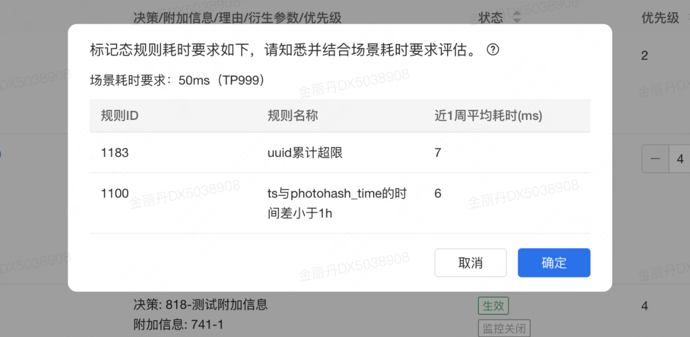
4.6 请求超时日志标签
在日志查询中增加“请求超时”标签，且在日志详情中增加“异常信息”模块，当请求超时时则在异常信息中可查看事件、场景、数据接口的具体耗时及耗时要求。
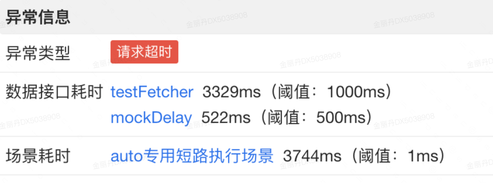
五、问题反馈
对数据口径、功能使用等如有疑问，请联系：产品@金丽丹 研发@王雅靓